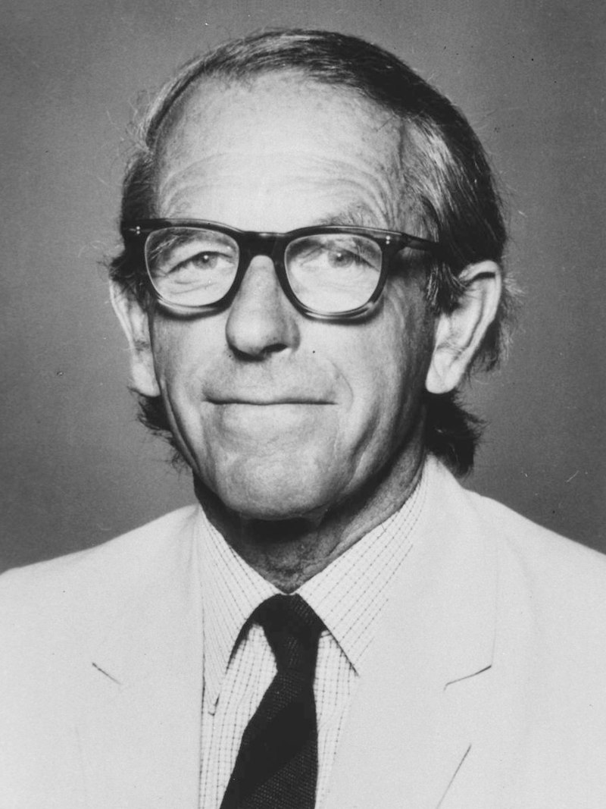

|

|
Фредерик Сенгер получил две Нобелевские премии по химии: в 1958 году и в 1980 году. Широко известны в научной среде его работы
по определению структур ДНК, РНК и инсулина, за последнее он и получил свою первую Нобелевскую премию.
Сенгер получил много и других наград:
- Медаль Кордэй — Моргана (1951)
- Член Лондонского королевского общества (с 1954 года)
- Командор ордена Британской империи (1963)
- Королевская медаль Лондонского королевского общества (1969)
- Международная премия Гайрднера (1971, 1979)
- Медаль Копли (1977)
- Премия Уэланда (1978)
- Премия Луизы Гросс Хорвиц (1979)
- Премия Альберта Ласкера за фундаментальные медицинские исследования (1979)
- Орден Кавалеров Чести (1981)
- Член Австралийской академии наук (с 1982 года)
- Орден Заслуг (1986)
- Премия ABRF (1994)
- Golden Plate Award, Academy of Achievement (2000)
|